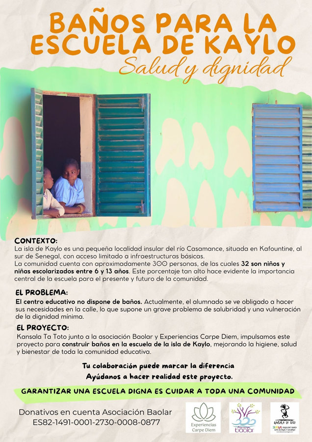

Proyecto en marcha
Baños para la escuela de la isla de Kaylo
Kaylo es una pequeña isla del río Casamance, en la zona de Kafountine, donde viven unas 200 personas. 32 de ellas son niños y niñas de entre 6 y 13 años que van a la escuela.
La escuela no tiene baños, y el alumnado tiene que hacer sus necesidades en la calle. Junto a Kansala Ta Toto y Experiencias Carpe Diem impulsamos su construcción. Esta intervención permitirá:
- Mejorar la higiene y prevenir enfermedades.
- Garantizar intimidad y seguridad, especialmente a las niñas.
- Reforzar la infraestructura básica de la comunidad.
